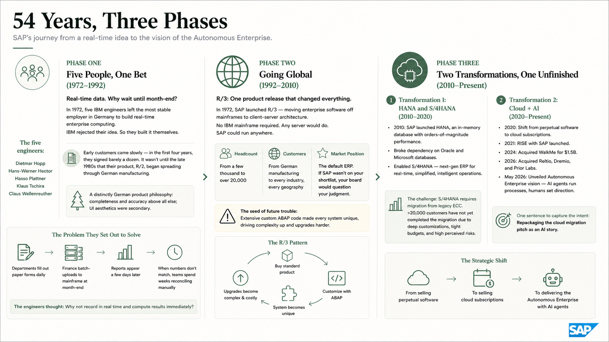
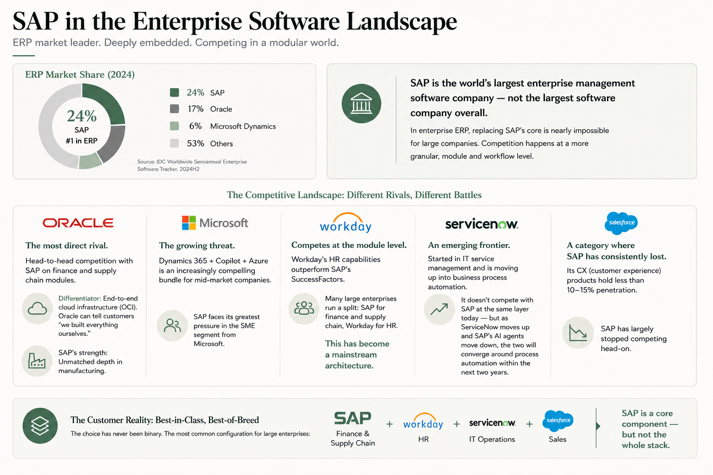

From Five People to a Global Platform
SAP's historical evolution, strategic shifts, and the business logic behind it today
A Simple Question
Imagine you run a manufacturing company. You have 5,000 employees across three countries, generating thousands of purchase orders, hundreds of accounting entries, and dozens of inventory movements every day. Your CFO asks: "What's our profit this month?" Your procurement manager asks: "When does this batch of materials arrive?" Your plant manager in Germany asks: "How many days of inventory does the China subsidiary have left?"
Without a unified system, you can't answer any of these. Finance uses one tool, procurement uses another, warehousing runs on Excel. Month-end means two weeks of manual reconciliation — and a number that's roughly right at best.
SAP exists to turn that chaos into order.
This isn't a story about software being pleasant to use. It's a story about software that works at all. SAP became the world's largest enterprise software company not because it built the most elegant or intelligent product, but because it solved the most basic problem: getting every part of a company to run inside a single system.
Chapter 1: What Problem It Solves, How It Makes Money
What It Sells
SAP's core product is an ERP (Enterprise Resource Planning) system — a single platform that brings together a company's finance, procurement, inventory, production, sales, and HR.
Think of how a city needs water, power, transport, and communications to coordinate. ERP is the operating system for an enterprise. Without it, every department runs its own rules. With it, everyone at least shares the same underlying map.
SAP's product line extends well beyond ERP:
- SuccessFactors — HR (recruiting, performance, payroll)
- Ariba — Procurement (supplier management, sourcing)
- Concur — Travel and expense management
- BTP (Business Technology Platform) — The platform for building on top of SAP
But ERP is the core, the foundation. Everything else grew out from it.
How the Business Works
SAP has gone through two distinct models for selling software.
It started with perpetual licensing. Customers paid a large upfront fee for a license (say €5M), then an annual maintenance fee of around 22% (€1.1M/year). In exchange: the software was yours indefinitely, with no further license payments. This model made SAP extremely profitable through the 1990s and 2000s — buying SAP was like purchasing infrastructure you'd use for decades.
You pay a large down payment to own a property (the license), then pay annual maintenance fees. The property is yours — you can renovate, modify, and live in it for life.
Now it's shifting to subscriptions. Under RISE with SAP, customers pay an annual fee that bundles software, infrastructure, and support. Stop paying, and the system goes dark.
You pay monthly rent — utilities and maintenance included. You don't own the property, but you don't have to worry about repairs. The landlord (SAP) can upgrade your furniture (software) at any time.
From the customer's perspective: subscriptions lower the upfront cost, but often cost more over time. So why is SAP pushing hard for subscriptions? Not because it's better for customers — but because it's better for SAP. Recurring revenue is more predictable and stable, which earns a higher valuation multiple from capital markets.
Why Customers Keep Paying
Not because SAP's product is the best. Many users will tell you privately that the interface "looks like something from the 1990s."
Customers keep paying for one very practical reason: they can't leave.
SAP got three things right — probably not by design, but through the accumulation of history:
First, your business processes are embedded in its code. A company that has run SAP for 15 years has written tens of thousands of custom ABAP programs — for inventory valuation, procurement approvals, cost accounting. Replace SAP, and all of that gets thrown away.
Second, your data is locked inside its system. Ten years of financial records, supplier lists, customer transaction history, and audit trails all live in SAP's database. That data cannot be migrated by "exporting to Excel." The data models are different, the business rules are different, the compliance requirements are different. Moving a large company's financial data from one system to another isn't a weekend project — it's a year-long program at minimum.
Third, your entire ecosystem is built around SAP. The consultants who implemented your system (Accenture, Deloitte), the ISVs who built plugins on top of it, the SAP-certified staff you hired — the whole support structure revolves around SAP. Replacing it doesn't mean swapping one vendor; it means rebuilding an entire ecosystem.
I'm dissatisfied, but I can't leave. This relationship isn't "I pay because you're great." It's "you've grown into me, and I have no choice but to keep paying."
Chapter 2: 54 Years, Three Phases
Phase One: Five People, One Bet (1972–1992)
In 1972, five engineers at IBM Germany quit. In the Germany of that era, leaving IBM was considered reckless — it was the most stable employer around. So why did they go?
Their idea was concrete: enterprise data shouldn't have to wait until month-end to be visible.
At the time, businesses operated like this: departments filled out paper forms daily, finance batch-uploaded everything into a mainframe at month-end, and reports appeared a few days later. When numbers didn't match, teams spent weeks reconciling manually. These five engineers — Dietmar Hopp, Hans-Werner Hector, Hasso Plattner, Klaus Tschira, and Claus Wellenreuther — thought this was a waste of time. Why not record data in real time and compute results immediately?
IBM rejected the idea — they didn't think "real-time computing" was something enterprise customers needed. So the five left and built it themselves.
Early customers came slowly. Their first client was a German chemical company. In the first four years, they signed barely a dozen customers. It wasn't until the late 1980s that their product, R/2, began spreading through German manufacturing.
This early SAP had a distinctly German product philosophy: completeness and accuracy above all else; UI aesthetics were secondary. That DNA has persisted to this day.
Phase Two: Going Global (1992–2010)
In 1992, SAP launched R/3 — the most consequential product release in its history.
R/3 did one simple but revolutionary thing: it moved enterprise software off mainframes and onto client-server architecture. Companies no longer needed to buy IBM mainframes to run SAP. Any server would do, which meant SAP was no longer part of IBM's hardware ecosystem — it could run anywhere.
The returns exceeded everyone's expectations.
Through the 1990s, SAP transformed from a German company into a global one. Headcount grew from a few thousand to over 20,000. The customer base expanded from German manufacturing to every industry, every geography. R/3 didn't just make SAP profitable — it made SAP the default: if you were conducting an ERP selection and didn't put SAP on the shortlist, your board would question your judgment.
But R/3's success planted a seed of future trouble.
The R/3 era established a pattern: customers bought the standard product, then hired consultants to write extensive custom ABAP code to fit their unique processes. Every enterprise reshaped SAP around its own workflows. The result: SAP's sales ran smoothly (customers believed "anything can be customized"), but each customer's system grew increasingly complex and harder to upgrade. Every SAP installation became one of a kind. That meant that whenever SAP wanted to push customers to a new version, the lift was enormous.
Phase Three: Two Transformations, One Unfinished (2010–Present)
Transformation 1: HANA and S/4HANA (2010–2020)
In 2010, SAP launched HANA — an in-memory database.
Traditional databases store data on disk, which is slow to read and write. HANA stores data in memory, achieving orders-of-magnitude faster performance. This sounds like a technical upgrade, but the business implications ran deep. HANA gave SAP its own database layer, breaking its dependency on Oracle and Microsoft databases. More importantly, it became the foundation for S/4HANA — SAP's next-generation ERP — enabling tasks that once required multiple systems to be handled by one.
But there was a problem: S/4HANA required customers to migrate away from the legacy ECC system. Migration meant spending millions of euros over multiple years while tolerating the risk of business disruption. Customers resisted. Today, more than 20,000 customers still haven't completed the migration — not because they don't want to, but because their customizations run too deep, their budgets are too tight, and the risks are too high.
Transformation 2: Cloud + AI (2020–Present)
Starting in 2020, SAP forced itself to shift from "selling perpetual software" to "selling cloud subscriptions." This is a business model change, not a technology one.
RISE with SAP (launched 2021) bundled software, infrastructure, and support into a single subscription package. In 2024, SAP acquired WalkMe for $1.5B to add guided-navigation capability to its AI assistant. In 2026, it acquired Reltio, Dremio, and Prior Labs in quick succession — filling gaps in data unification, open data access, and tabular AI models. Also in May 2026, SAP unveiled the Autonomous Enterprise vision: enterprise processes run autonomously by AI agents, with humans setting direction rather than operating software.
The core intent of this entire transformation can be stated in one sentence: repackaging the cloud migration pitch as an AI story.
Customers wouldn't move to the cloud just because it was "cheaper" — when they ran the numbers, total cost of ownership often didn't improve. But what if staying off the cloud meant no AI agents? No autonomous operations? That's a more compelling argument. From customer surveys, the strategy appears to be working: 43% of customers cite SAP's AI announcements as a primary factor in adjusting their ERP strategy. But trust is eroding too — 72% of customers express reservations about SAP's licensing terms.

After Three Phases: What Is SAP's DNA?
Three product generations, three historical phases — and four patterns that recur throughout. This is SAP's DNA.
First, it excels at foundations, not facades. SAP's products have never been the most polished. What SAP does well is making financial data across dozens of countries, thousands of users, and tens of thousands of tables "run correctly" inside a single system. It doesn't make you happy when you open it. But it makes the numbers add up at month-end.
Second, it excels at lock-in, not letting go. Every product iteration — whether intentionally or not — has made customers harder to leave. From R/2 to R/3 to S/4HANA to BTP, each step has added another layer of switching cost. The fact that customers can't leave is itself SAP's deepest moat.
Third, it excels at incremental improvement, not disruptive reinvention. SAP never tears things down and starts over. It always adds a new layer on top of the existing foundation — R/3 added a new technical architecture on top of R/2's process model; HANA added in-memory compute on top of the traditional database; Autonomous Enterprise adds an AI layer on top of S/4HANA. The upside: customers don't have to undergo a revolution all at once. The downside: SAP can never fully escape its historical baggage.
Fourth, it serves organizations, not individuals. SAP's customers are companies, not people. Its products don't need to delight individual users — they need to satisfy CFOs and CIOs. This is a foundational trait: SAP doesn't need you to love its product the way Apple does. It just needs you to have no choice but to use it.
Chapter 3: Where It Stands — Competition and Threats
SAP is the world's largest enterprise management software company — not the largest software company overall (Microsoft is bigger). In the ERP market, it holds roughly 24% share, ranking first. Oracle is second at ~17%, Microsoft Dynamics third at ~6%.
But market share and competitive dynamics are different things. SAP's competitive battles aren't about being replaced outright — in enterprise ERP, replacing SAP's core is nearly impossible for large companies. Competition happens at a more granular level:
Oracle is the most direct rival. The two compete head-to-head on finance and supply chain modules. Oracle's differentiator is its end-to-end cloud infrastructure (OCI) — Oracle can tell customers "we built everything ourselves." SAP can't say that; its cloud runs on AWS, Azure, and GCP. But SAP's depth in manufacturing is something Oracle cannot match.
Microsoft is the growing threat. Dynamics 365 + Copilot + Azure is an increasingly compelling bundle for mid-market companies. SAP faces its greatest pressure in the SME segment from Microsoft.
Workday competes at the module level. Workday's HR capabilities outperform SAP's SuccessFactors. Many large enterprises now run a split: SAP for finance and supply chain, Workday for HR. This has become a mainstream architecture.
ServiceNow represents an emerging frontier. ServiceNow started in IT service management and is moving up into business process automation. It doesn't compete with SAP at the same layer today — but as ServiceNow moves up and SAP's AI agents move down, the two will converge around process automation within the next two years.
Salesforce is a category where SAP has consistently lost. Its CX (customer experience) products hold less than 10–15% penetration, and SAP has largely stopped competing head-on.
For customers, the choice has never been binary. The most common configuration is: SAP for finance and supply chain, Workday for HR, ServiceNow for IT operations, Salesforce for sales. SAP is a core component — but not the whole stack. Each modular competitor has its own domain of strength.

Chapter 4: Where It's Heading
SAP's publicly stated direction is the Autonomous Enterprise — core business processes executed autonomously by AI agents, with humans setting direction while AI handles execution.
To get there, SAP is doing three things:
First, reframe cloud migration as an AI unlock. The old "cloud is cheaper" narrative failed — customers ran the math and found total cost of ownership didn't improve. SAP's new argument is "no cloud, no AI agents." At Sapphire 2026, SAP announced that ECC and on-premise customers must commit to redirecting at least 50% of their maintenance spend toward cloud to access certain AI capabilities. This is using AI as the final lever to push reluctant customers onto the cloud.
Second, acquire what it can't build fast enough. Between 2024 and 2026, SAP acquired WalkMe, Reltio, Dremio, and Prior Labs — addressing AI interaction, data unification, non-SAP data access, and tabular AI models respectively. The common thread: SAP identified each area as critical but judged that building from scratch would take too long.
Third, turn AI agents into a new revenue line. Currently, RISE customers receive three Joule agents at no charge; additional agents are billed on demand. If this model scales, SAP can grow revenue per customer without growing its customer count. The longer-term direction may be consumption-based pricing — paying for AI agent capacity the way you pay for compute.
These three moves point toward a single future: SAP evolving from a company that sells ERP applications into a company that sells platform capabilities. Its growth engine shifts from "signing new customers" to "existing customers buying more modules and exceeding AI usage thresholds."
Whether this plays out depends on one question: do customers still trust SAP? The narrative is compelling, but years of contentious migrations and disputed contract terms have left many customers watching every new SAP announcement with their guard up.
The Thread That Runs Through SAP
To understand SAP as a company, you don't need to memorize its product catalog, acquisitions, or financial metrics. You need one lens:
What's most distinctive about SAP isn't the quality of its products — it's its pattern of development: always adding a layer, never tearing down the foundation. Every major change since 1972 has placed something new on top of what already existed. This approach let SAP navigate three major transitions without losing its installed base. But it has also accumulated compounding technical debt — systems of extraordinary complexity, customers increasingly difficult to migrate, and transformations that always take longer than the market expects.
This lens explains many apparent contradictions:
- Why does SAP's UI still feel like the 1990s? Because every new layer carries the weight of backward compatibility with the layers below.
- Why does every SAP transition seem slow? Because SAP doesn't switch tracks — it builds new track on top of the old one.
- Why do customers feel "stuck with SAP"? Because the layering approach means customers never have to change everything at once — but it also means they get embedded more deeply with each cycle.
- Why is SAP's moat deep but its growth ceiling limited? Because layering produces stability, not speed.
This layering logic is what distinguishes SAP from Oracle, Salesforce, and Microsoft. Its competitors can choose to change lanes, pivot, or disrupt themselves. SAP cannot. Its customers and its history have locked it into a single trajectory: one layer at a time. That means any new direction SAP announces — whether Autonomous Enterprise or AI agents — will move slower than the market hopes, and hold longer than the market expects.
Further Reading
The following are sources referenced in writing this article, along with recommended reading for anyone who wants to go deeper on SAP:
- SAP Integrated Report 2025 (sap.com/integrated-reports/2025) — the most comprehensive annual operating data
- SAP Sapphire 2026 Innovation News Guide (sap.com/topics/events/sapphire) — official read on the latest strategy announcements
- SAP Performance Measures (sap.com/investors/sap-non-ifrs-measures) — definitions for CCB and other core metrics
- DSAG Investment Report 2026 — annual survey of SAP's German-speaking user group; the clearest window into real customer sentiment
- ASUG Pulse of the SAP Customer 2026 — North American customer satisfaction survey
- Forrester: "SAP Sapphire 2026: Credible Vision, Real Concentration Risk" — the sharpest third-party analysis of Sapphire 2026
- Futurum Group: "SAP Bets the Enterprise on Autonomous AI, But Can It Deliver?" — an assessment of the Autonomous Enterprise thesis
- CIO.com SAP channel — regular coverage of customer perspectives
- ERP Today / SAPinsider — dedicated SAP industry reporting
- E3 Magazin (German) — the most active SAP trade publication in the DACH region
Start with the CEO letter in the SAP Integrated Report 2025 — that's how SAP tells its own story. Then read the DSAG Investment Report 2026 to see how customers view the same facts. Finish with the Forrester analysis for the independent perspective. Read all three and you'll have a three-dimensional picture of SAP.